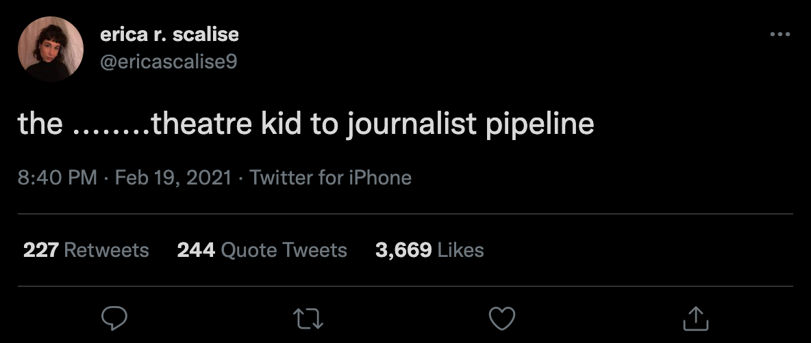

The Bringing together Language and Behavior for Large-scale Analytical Breakthroughs Laboratory (Blablablab)
This semester I joined blablablab, which is objectively the reserach group with the coolest name at Michigan. I research how rhetorical frames impact engagement in Tweets about immigration and how the rhetorical frames in quote tweets and replies differ from the original tweet.
My research is a spin-off of this paper authored by the PhD student I work with and her advisors. We're aiming to publish our work in the spring of 2022.
The Michigan Daily
I joined The Michigan Daily on a whim freshman year and now I manage all of the paper's social media and newsletters. Not really sure how that happened but I couldn't be happier.
To see my work in action follow us on Twitter (or our sports twitter if that's more your vibe), Facebook, Instagram and subscribe to our newsletters!
Bluebonnet Data
During winter 2021 I was a volunteer data scientists with Bluebonnet Data, an organization that pairs people with technical skills with progressive campaigns and organizations.
I worked with New Rural Project to understand demographic trends and voter behavior in North Carolina's 9th Congressional District.
Heuristic Analysis
Fall 2020 I took SI 110 "Introduction to Information Studies." As a class project I completed a heuristic analysis of Twitter using Nielsen's 10 Usability Heuristics.
I didn't know a ton about UX before taking this class, so this project was a great way to dive into usability and learn more about what it looks like in practice.